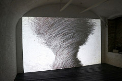
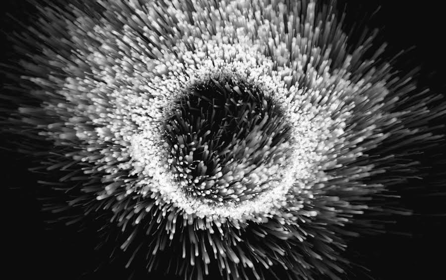

Brandon Morse
Brandon Morse
 
A different type of animation and study that Brandon Morse does is a focus on motion and large-scale naturally occuring phenomena. His work in this area varies. Similarly to his work with collapsing structures, these are shapes changing over time. These shapes on the other hand, are more organic and seem a little more random than the collapsing buildings. Some of his work in this area include: "Instrinsic Magnetic Moment," and "A Charged Shape."